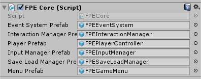

There are a few key prefabs that control all the behaviour of First Person Exploration Kit. They are all managed by one prefab: FPECore. This core is the only prefab you need to place in your scene for all other systems to be created and managed throughout the lifecycle of your game.
The FPECore prefab contains references to existing system prefabs that drive the "out of the box" behaviour, and drive the demo build.
| Event System | This prefab is based on the standard issue Unity EventSystem. It has been customized to listen to specific Unity Inputs. It drives the UI system including the Menu, Journal, etc. |
| Interaction Manager | This prefab does the bulk of the heavy lifting for behaviours. It handles player interactions with the objects in the world, UI updates, and so on. |
| Player | This prefab is the player controller. It's a fairly standard Character Controller-based object with Mouse Look, Camera, etc. It handles movement, running, jumping, crouching, and looking around. But it also has some more complicated stuff like handling Dockable type interactions, freezing player motion or look when required, etc. If you want to use your own player controller, you can. But, there is some work to do. There's a region of code contained in the FPEInteractionManagerScript.cs file under the name 'PLAYER_CONTROLLER_SPECIFIC'. To switch to another off-the-shelf controller such as UFPS or the Unity Standard Assets controller, you will have to ensure that these functions hook into those controllers. For example, the enableMouseLook() and disableMouseLook() functions currently talk to the provided FPEMouseLook script. To make this work with another controller, you would have to change those functions to tie in to the functionality of those other controlers. |
| Input Manager | This prefab provides an abstraction layer between the Unity Input system and the rest of the kit. The inputs are defined virtually, so you can more easily support multiple input types without editing the rest of the code in the kit. For example, the Interaction Manager checks for the "Interact" input. If you wanted to allow for another key to perform interactions, you would update FPEInputManager.cs script, and would not have to change any other code. |
| Save Load Manager | This prefab handles saving and loading of game files. It uses C# code to serialize object data in binary form to data files. It is only guaranteed to work on Windows PC builds, but provides a good basis for other platforms as well. They are not guaranteed to work for QA and maintenance reasons (I don't own a Mac or have a PS4 Pro Dev Kit, for example). For more information, please see the Save Game System documentation. |
| Menu | This prefab is by default set to be the FPEGameMenu prefab, but can be any FPEMenu-derived prefab. For example, you can swap it out with the included FPESimpleMenu prefab and everything will work as expected, in accordance with the buttons provided on the Simple Menu. You can also make your own Menu prefab and assign it here. |
Here is a visual overview of the core systems if First Person Exploration Kit.
The Menu and Save/Load systems were specifically designed to be completely interchangeable.
As shipped, this asset assumes that the FPEGameMenu prefab (default Menu in FPECore), and FPESaveLoadManager (default Save Load Manager in FPECOre) will be used together. If you want to use a different Menu and still use the included Save/Load Manager, you absolutely can. You just need to ensure your new Menu calls the Public Interfaces inside FPESaveLoadManager the same way that FPEGameMenu does.
Conversely, if you want to reuse the FPEGameMenu prefab, but write your own Save/Load Manager, you can. You just need to ensure that the button events assigned in the UI elements of the FPEGameMenu prefab as re-assigned to your new Save/Load functions.
Generally speaking, it is best to extend any existing class if you want to replace it. For example, if you want to write your own Save/Load Manager, it is best to make a child class, even if it's mostly a copy of the original. That way, when this asset is updated, your custom system code won't get overwritten.